📖
عمليات الحياة في النباتات
الفصل الثالث: عمليات الحياة في النباتات والمخلوقات الحية الدقيقة · الصفحات ٧٨ – ٨٩
❓ السؤال الأساسيما أجزاء النباتات؟ وكيف تقوم بوظائفها؟
💡 الزبدة⚖️ انتبهي للفرق🔍 توضيح⚠️ فخ في الاختبار✍️ حلّ سؤال الكتاب
في كل بطاقة فكرة واحدة: اقرئي فقرة الكتاب ثم حاشيتها، ثم اسحبي إلى البطاقة التالية 👈
أنظر وأتساءل
تحتاج النباتات، مثلها مثل بقية المخلوقات الحية الأخرى، إلى الغذاء لتعيش. من أين تحصل النباتات، ومنها نبات التين الشوكي، على غذائها؟ وكيف تحصل على طاقتها؟
✍️ الجوابفكّري ثم اضغطي
تصنع النباتات غذاءها بنفسها بعملية البناء الضوئي في أوراقها، مستخدمةً ضوء الشمس وثاني أكسيد الكربون والماء، فتحصل على طاقتها من الشمس.
📝 مفردات الدرس
الساقتراكيب تُبقي النبات محافظًا على قوامه، وتحمل الأوراق.
الجذورجزء من النبات يثبّت النبات في التربة، ويخزّن الغذاء، ويمتص الماء والمواد المغذية من التربة.
البناء الضوئيعملية تقوم بها النباتات ومخلوقات حية أخرى، تستخدم فيها ضوء الشمس لإنتاج الغذاء في صورة سكر الجلوكوز.
التكاثرإنتاج أفراد من النوع نفسه.
البذرةتركيب يخزّن الغذاء، وفيه نبات صغير غير مكتمل النمو.
التلقيحانتقال حبوب اللقاح من المتك إلى الميسم.
ص٨٠ · أهمية السيقان والجذور
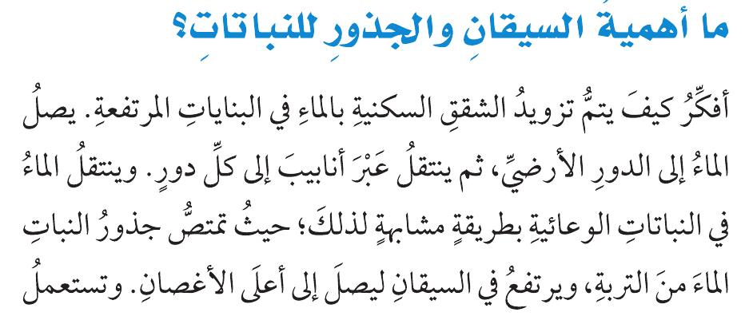
💡 الزبدة
تمتص الجذور الماء من التربة، ويرتفع في السيقان ليصل إلى أعلى الأغصان، كما يصل الماء إلى الأدوار العليا عبر الأنابيب.
ص٨٠ · أهمية السيقان والجذور
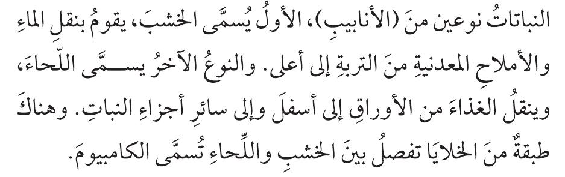
⚖️ انتبهي للفرق
الخشب
ينقل الماء والأملاح المعدنية
من التربة إلى أعلى
اللحاء
ينقل الغذاء
من الأوراق إلى أسفل وإلى سائر أجزاء النبات
⚠️ فخ في الاختبار
خشب = خارج من التربة إلى أعلى (ماء)، ولحاء = للغذاء.
ص٨٠ · أهمية السيقان والجذور
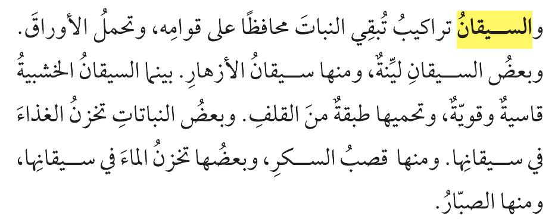
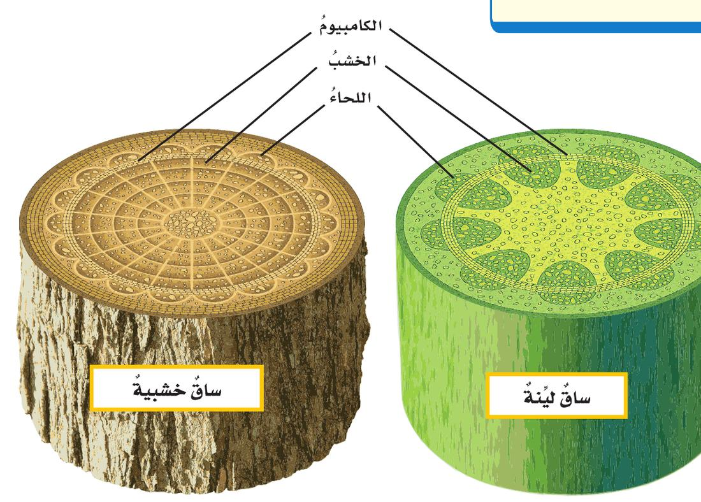
⚖️ انتبهي للفرق
ساق لينة
منها سيقان الأزهار
ساق خشبية
قاسية وقوية، تحميها طبقة من القلف
🔍 توضيح
بعض النباتات تخزّن الغذاء في سيقانها، ومنها قصب السكر، وبعضها تخزّن الماء في سيقانها، ومنها الصبار.
ص٨١ · الجذور وانتقال المواد
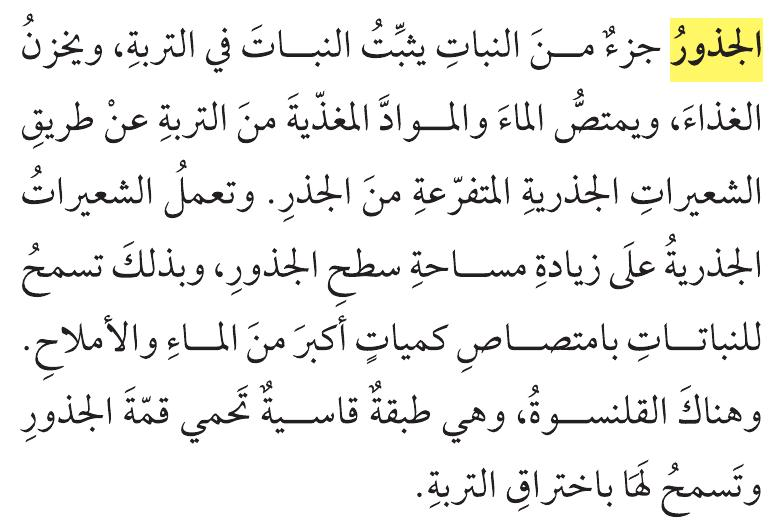
💡 الزبدة
وظائف الجذور: تثبّت النبات في التربة، وتخزّن الغذاء، وتمتص الماء والمواد المغذية عن طريق الشعيرات الجذرية، التي تزيد مساحة سطح الجذور.
🔍 توضيح
القلنسوة طبقة قاسية تحمي قمة الجذور وتسمح لها باختراق التربة.
ص٨١ · الجذور وانتقال المواد
⚖️ انتبهي للفرق
الجذور الوتدية
تنمو إلى أعماق كبيرة في التربة
الجذور الليفية
تنمو قريبة من سطح التربة، وتكون على شكل شبكة كبيرة
ص٨١ · الجذور وانتقال المواد
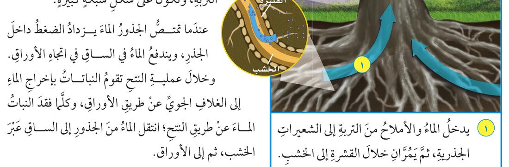
💡 الزبدة
النتح: إخراج النباتات الماء إلى الغلاف الجوي عن طريق الأوراق. وكلما فقد النبات الماء بالنتح انتقل الماء من الجذور عبر الخشب في الساق إلى الأوراق.
ص٨١ · الجذور وانتقال المواد
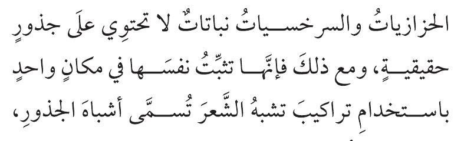
⚠️ فخ في الاختبار
الحزازيات والسرخسيات لا تحتوي على جذور حقيقية، بل تراكيب تشبه الشعر تسمى أشباه الجذور.
ص٨١ · الجذور وانتقال المواد
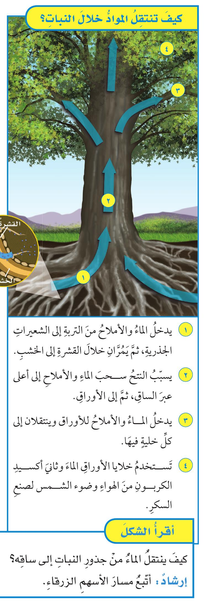
🔍 تتبعي الأسهم
١- يدخل الماء والأملاح من التربة إلى الشعيرات الجذرية، ثم إلى الخشب.
٢- يسبب النتح سحب الماء والأملاح إلى أعلى عبر الساق.
٣- يدخل الماء والأملاح إلى الأوراق.
٤- تستخدم خلايا الأوراق الماء وثاني أكسيد الكربون وضوء الشمس لصنع السكر.
٢- يسبب النتح سحب الماء والأملاح إلى أعلى عبر الساق.
٣- يدخل الماء والأملاح إلى الأوراق.
٤- تستخدم خلايا الأوراق الماء وثاني أكسيد الكربون وضوء الشمس لصنع السكر.
✍️ حلّ «أقرأ الشكل»اضغطي لتري الإجابة
يدخل الماء من التربة إلى الشعيرات الجذرية، ثم إلى الخشب، ويُسحب إلى أعلى عبر الساق بسبب النتح.
ص٨١ · الجذور وانتقال المواد
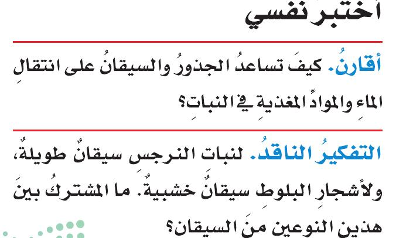
✍️ حلّ «أختبر نفسي»اضغطي لتري الإجابة
أقارن: الجذور تمتص الماء والمواد المغذية من التربة، والسيقان تنقلها عبر الخشب إلى الأوراق.
التفكير الناقد: كلاهما ساق تحمل النبات وتنقل الماء والغذاء، وفي كليهما خشب ولحاء.
التفكير الناقد: كلاهما ساق تحمل النبات وتنقل الماء والغذاء، وفي كليهما خشب ولحاء.
ص٨٢ · كيف تعمل أوراق النباتات؟
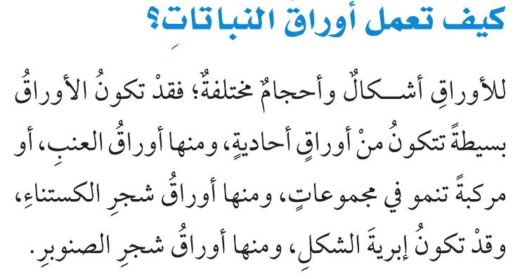
⚖️ أشكال الأوراق
بسيطة
أحادية: ورق العنب
مركّبة
تنمو في مجموعات: الكستناء
إبرية
ورق الصنوبر
ص٨٢ · كيف تعمل أوراق النباتات؟
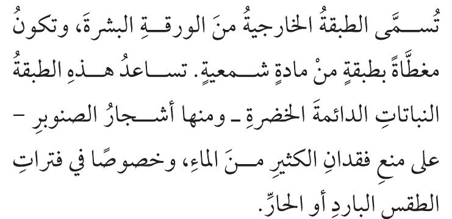
💡 الزبدة
البشرة الطبقة الخارجية من الورقة، مغطاة بطبقة من مادة شمعية تمنع فقدان كثير من الماء، خصوصًا في فترات الطقس البارد أو الحار.
ص٨٢ · كيف تعمل أوراق النباتات؟
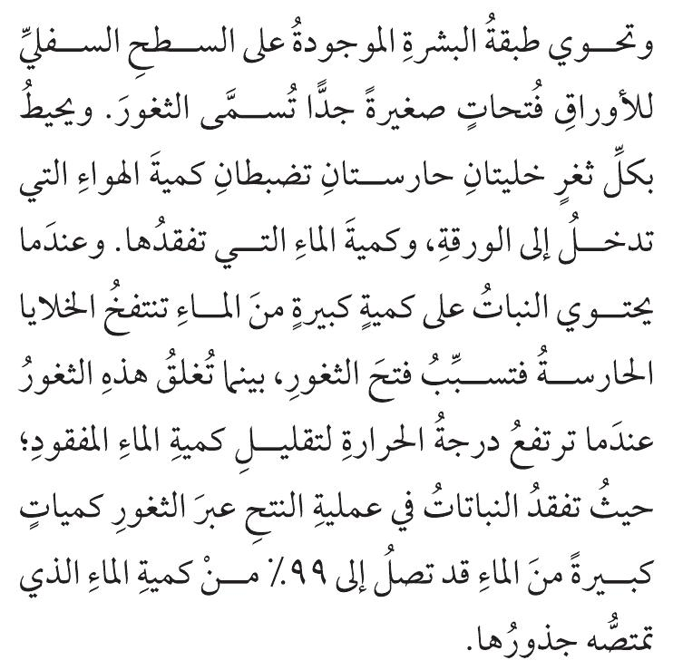
💡 الزبدة
الثغور فتحات صغيرة جدًا في البشرة السفلى، يحيط بكل ثغر خليتان حارستان تضبطان كمية الهواء الداخلة والماء المفقود.
⚖️ انتبهي للفرق
ماء كثير في النبات
تنتفخ الخلايا الحارسة فتُفتح الثغور
ارتفاع درجة الحرارة
تُغلق الثغور لتقليل الماء المفقود
⚠️ فخ في الاختبار
قد يصل الماء المفقود بالنتح عبر الثغور إلى ٩٩٪ من كمية الماء التي تمتصها الجذور.
ص٨٢ · كيف تعمل أوراق النباتات؟
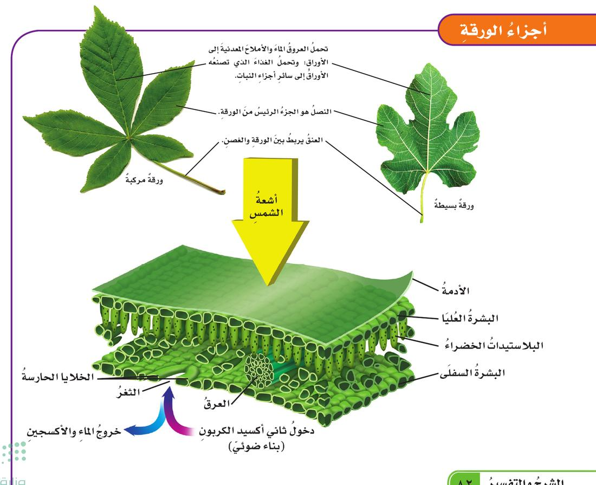
🔍 أجزاء الورقة
• العنق يربط بين الورقة والغصن.
• النصل الجزء الرئيس من الورقة.
• العروق تحمل الماء والأملاح إلى الأوراق، والغذاء إلى سائر النبات.
• يدخل ثاني أكسيد الكربون من الثغر، ويخرج الماء والأكسجين.
• النصل الجزء الرئيس من الورقة.
• العروق تحمل الماء والأملاح إلى الأوراق، والغذاء إلى سائر النبات.
• يدخل ثاني أكسيد الكربون من الثغر، ويخرج الماء والأكسجين.
ص٨٣ · البناء الضوئي
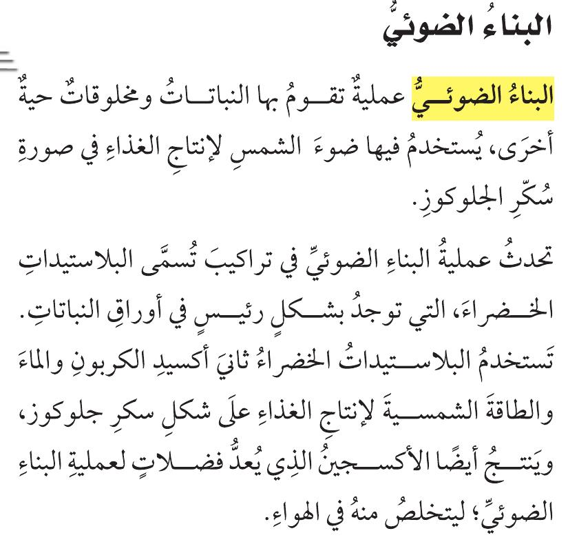
💡 الزبدة
يحدث البناء الضوئي في البلاستيدات الخضراء الموجودة بشكل رئيس في أوراق النباتات، وتستخدم ثاني أكسيد الكربون والماء والطاقة الشمسية لإنتاج سكر الجلوكوز، ويُنتج الأكسجين فضلات.
ص٨٣ · البناء الضوئي
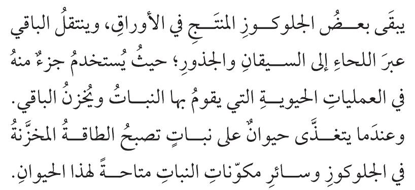
🔍 المعادلة
ثاني أكسيد الكربون + ماء←غذاء (سكر جلوكوز) + أكسجين
بوجود ضوء الشمس.💡 الزبدة
يبقى بعض الجلوكوز في الأوراق، وينتقل الباقي عبر اللحاء إلى السيقان والجذور. وعندما يتغذى حيوان على النبات تصبح الطاقة المخزنة متاحة له.
ص٨٣ · البناء الضوئي
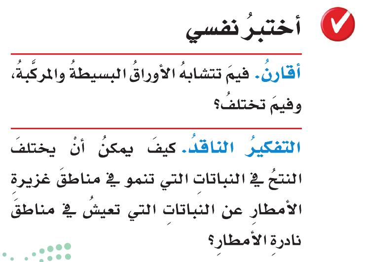
✍️ حلّ «أختبر نفسي»اضغطي لتري الإجابة
أقارن: كلاهما فيه عنق ونصل وعروق. والبسيطة ورقة أحادية، والمركّبة أوراق تنمو في مجموعات.
التفكير الناقد: النباتات في مناطق غزيرة الأمطار تفقد ماءً أكثر بالنتح، أما في مناطق نادرة الأمطار فتغلق ثغورها لتقلل فقدان الماء.
التفكير الناقد: النباتات في مناطق غزيرة الأمطار تفقد ماءً أكثر بالنتح، أما في مناطق نادرة الأمطار فتغلق ثغورها لتقلل فقدان الماء.
ص٨٤ · كيف تتكاثر النباتات؟
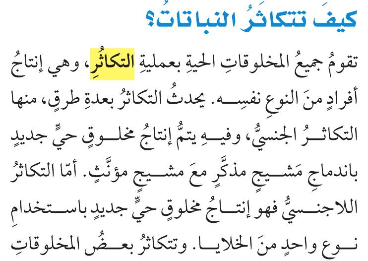
⚖️ انتبهي للفرق
التكاثر الجنسي
اندماج مشيج مذكر مع مشيج مؤنث
التكاثر اللاجنسي
باستخدام نوع واحد من الخلايا
ص٨٤ · كيف تتكاثر النباتات؟
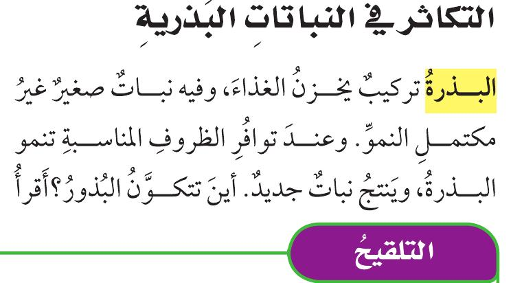
💡 الزبدة
البذرة تركيب يخزّن الغذاء، وفيه نبات صغير غير مكتمل النمو. وعند توافر الظروف المناسبة تنمو وينتج نبات جديد.
ص٨٤ · كيف تتكاثر النباتات؟
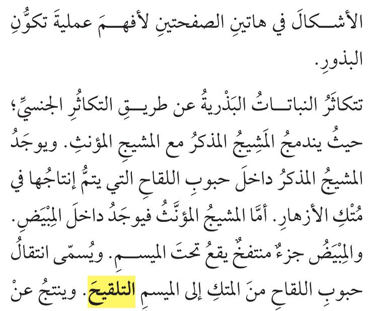
💡 الزبدة
تتكاثر النباتات البذرية بالتكاثر الجنسي.
• المشيج المذكر داخل حبوب اللقاح في المتك.
• المشيج المؤنث داخل المبيض تحت الميسم.
التلقيح: انتقال حبوب اللقاح من المتك إلى الميسم.
• المشيج المذكر داخل حبوب اللقاح في المتك.
• المشيج المؤنث داخل المبيض تحت الميسم.
التلقيح: انتقال حبوب اللقاح من المتك إلى الميسم.
ص٨٤ · كيف تتكاثر النباتات؟
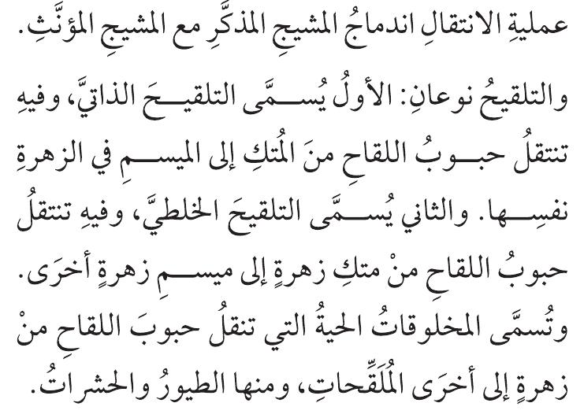
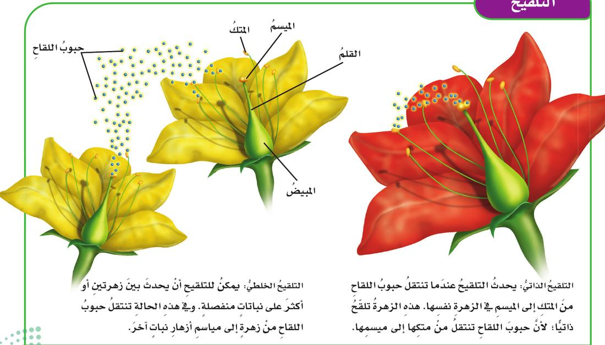
⚖️ انتبهي للفرق
التلقيح الذاتي
من المتك إلى الميسم في الزهرة نفسها
التلقيح الخلطي
من متك زهرة إلى ميسم زهرة أخرى
🔍 توضيح
الملقِّحات مخلوقات حية تنقل حبوب اللقاح من زهرة إلى أخرى، ومنها الطيور والحشرات.
ص٨٥ · الإخصاب والتكاثر اللابذري
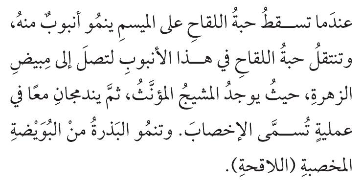
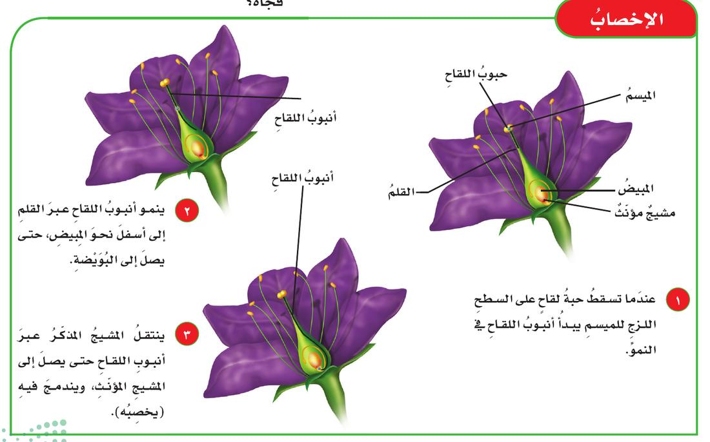
💡 الزبدة
الإخصاب: تسقط حبة اللقاح على الميسم فينمو منها أنبوب اللقاح إلى المبيض، فيندمج المشيج المذكر مع المشيج المؤنث. وتنمو البذرة من البويضة المخصبة (اللاقحة).
ص٨٥ · الإخصاب والتكاثر اللابذري
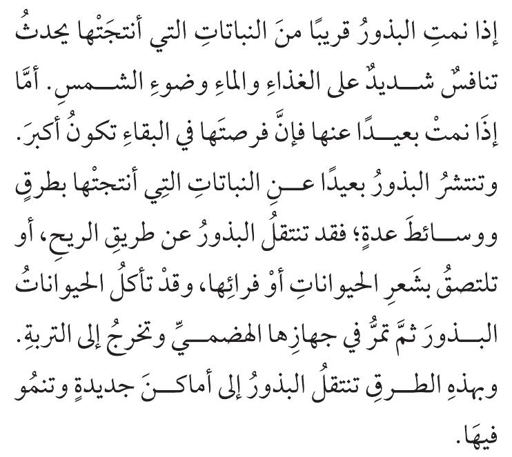
💡 الزبدة
إذا نمت البذور قريبًا من النبات الذي أنتجها يحدث تنافس شديد على الغذاء والماء وضوء الشمس، أما إذا نمت بعيدًا عنها ففرصتها في البقاء أكبر.
🔍 طرق انتشار البذور
• عن طريق الريح.
• تلتصق بشعر الحيوانات أو فرائها.
• تأكلها الحيوانات وتمر في جهازها الهضمي وتخرج إلى التربة.
• تلتصق بشعر الحيوانات أو فرائها.
• تأكلها الحيوانات وتمر في جهازها الهضمي وتخرج إلى التربة.
ص٨٥ · الإخصاب والتكاثر اللابذري
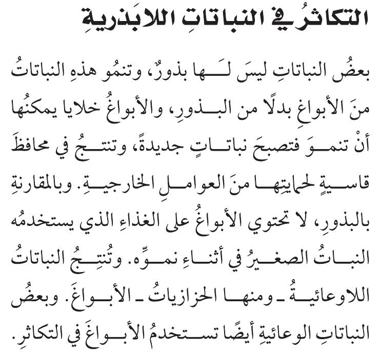
⚖️ انتبهي للفرق
البذور
تحتوي على غذاء للنبات الصغير
النباتات البذرية
الأبواغ
لا تحتوي على الغذاء
النباتات اللاوعائية، ومنها الحزازيات، وبعض النباتات الوعائية
ص٨٥ · الإخصاب والتكاثر اللابذري
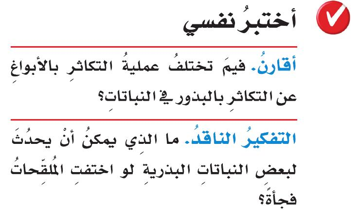
✍️ حلّ «أختبر نفسي»اضغطي لتري الإجابة
أقارن: التكاثر بالأبواغ يتم بنوع واحد من الخلايا ولا تحتوي الأبواغ على غذاء، أما البذور فتنتج من اندماج مشيجين وتحتوي على الغذاء.
التفكير الناقد: لا يحدث التلقيح، فلا تتكوّن بذور لبعض النباتات البذرية.
التفكير الناقد: لا يحدث التلقيح، فلا تتكوّن بذور لبعض النباتات البذرية.
ص٨٦ · دورة حياة النباتات اللابذرية
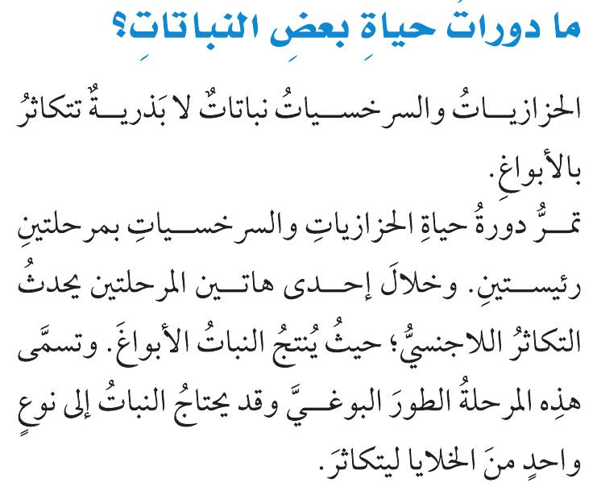
💡 الزبدة
تمر دورة حياة الحزازيات والسرخسيات بمرحلتين:
• الطور البوغي: تكاثر لاجنسي، ينتج فيه النبات الأبواغ.
• الطور الجاميتي: تكاثر جنسي، يحتاج فيه النبات إلى مشيج مذكر ومشيج مؤنث.
• الطور البوغي: تكاثر لاجنسي، ينتج فيه النبات الأبواغ.
• الطور الجاميتي: تكاثر جنسي، يحتاج فيه النبات إلى مشيج مذكر ومشيج مؤنث.
ص٨٦ · دورة حياة النباتات اللابذرية
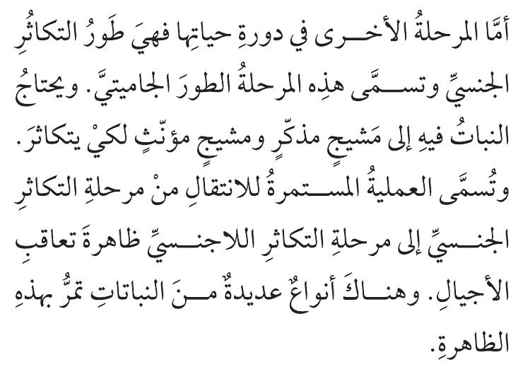
💡 الزبدة
تعاقب الأجيال: العملية المستمرة للانتقال من مرحلة التكاثر الجنسي إلى مرحلة التكاثر اللاجنسي.
ص٨٦ · دورة حياة النباتات اللابذرية
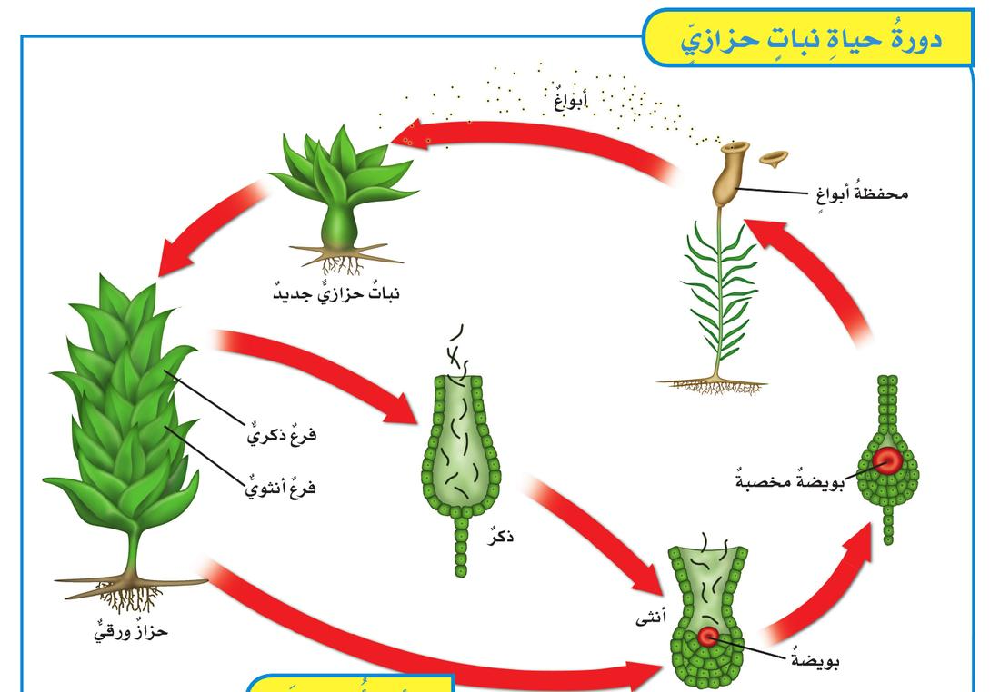
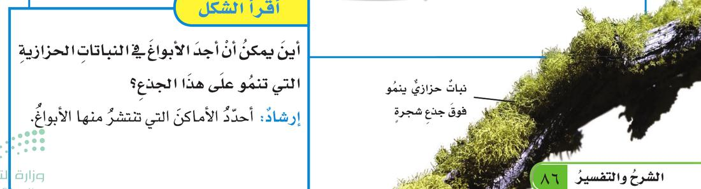
✍️ حلّ «أقرأ الشكل»اضغطي لتري الإجابة
في محافظ الأبواغ التي تنمو في أعلى النبات الحزازي.
ص٨٧ · النباتات البذرية
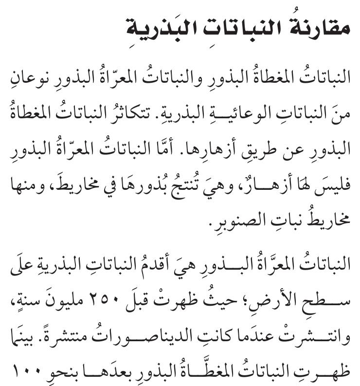
⚖️ انتبهي للفرق
مغطاة البذور
تتكاثر عن طريق أزهارها
ظهرت بعدها بنحو ١٠٠ مليون سنة
الفاكهة والخضراوات والحبوب ومعظم المكسرات
معراة البذور
ليس لها أزهار، تُنتج بذورها في مخاريط
أقدم النباتات البذرية: ظهرت قبل ٢٥٠ مليون سنة
الصنوبر
ص٨٧ · النباتات البذرية
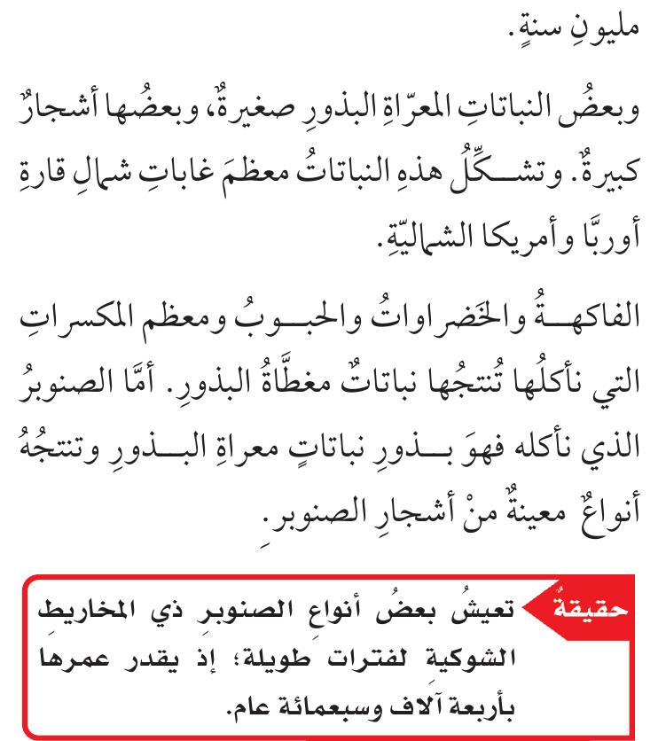
🔍 توضيح
النباتات معراة البذور تشكّل معظم غابات شمال قارة أوروبا وأمريكا الشمالية، وتعيش بعض أنواع الصنوبر ذي المخاريط الشوكية لفترات طويلة.
ص٨٧ · النباتات البذرية
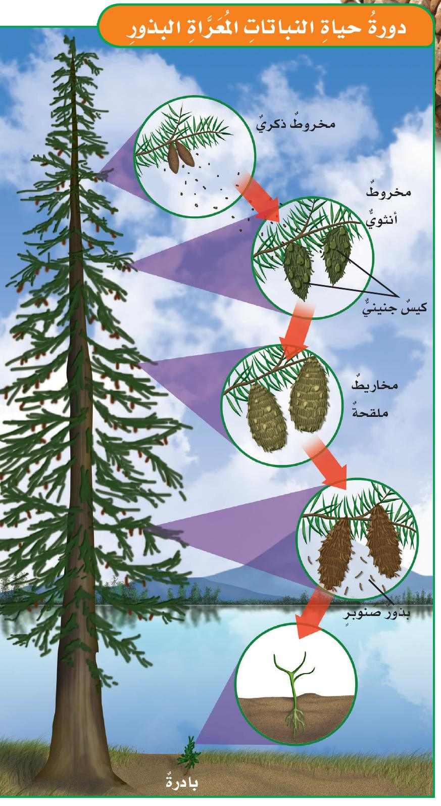
🔍 دورة حياة معراة البذور
مخروط ذكري ومخروط أنثوي ← مخاريط ملقحة ← بذور صنوبر ← بادرة.
ص٨٧ · النباتات البذرية
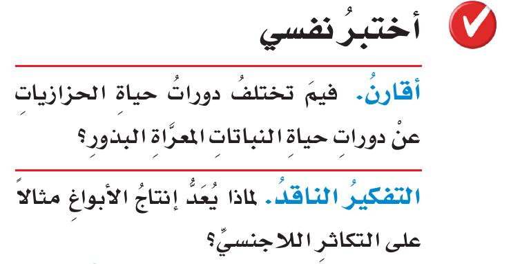
✍️ حلّ «أختبر نفسي»اضغطي لتري الإجابة
أقارن: الحزازيات تتكاثر بالأبواغ ودورة حياتها فيها طور بوغي وطور جاميتي، أما معراة البذور فتتكاثر بالبذور التي تُنتج في المخاريط.
التفكير الناقد: لأن الأبواغ تُنتج من نوع واحد من الخلايا، دون اندماج مشيج مذكر ومشيج مؤنث.
التفكير الناقد: لأن الأبواغ تُنتج من نوع واحد من الخلايا، دون اندماج مشيج مذكر ومشيج مؤنث.
ص٨٨ · كيف تخزّن النباتات الغذاء؟
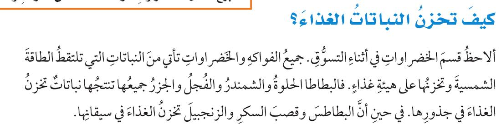
⚖️ أين تخزّن النباتات الغذاء؟
الجذور
البطاطا الحلوة، الشمندر، الفجل، الجزر
السيقان
البطاطس، قصب السكر، الزنجبيل
الأوراق
السبانخ، الخس، الملفوف
الأزهار
القرنبيط، البروكلي
⚠️ فخ في الاختبار
البطاطس تخزّن الغذاء في ساقها، أما البطاطا الحلوة ففي جذورها.
ص٨٨ · كيف تخزّن النباتات الغذاء؟
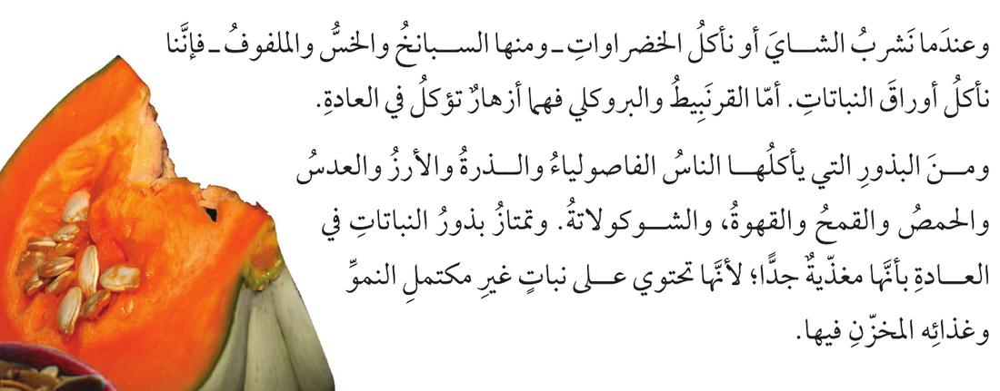
💡 الزبدة
تمتاز بذور النباتات بأنها مغذية جدًا؛ لأنها تحتوي على نبات غير مكتمل النمو وغذائه المخزّن فيها. ومنها الفاصولياء والذرة والأرز والعدس والحمص والقمح.
ص٨٨ · كيف تخزّن النباتات الغذاء؟
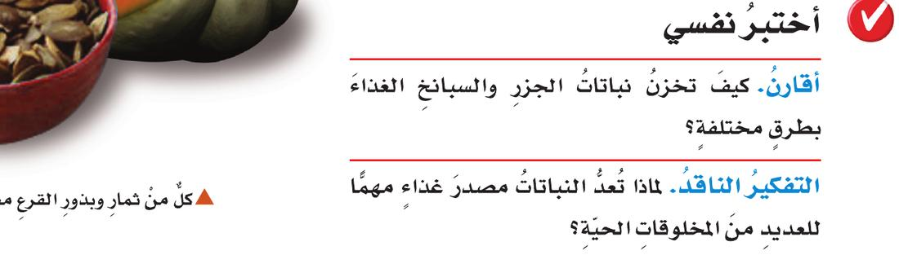
✍️ حلّ «أختبر نفسي»اضغطي لتري الإجابة
أقارن: الجزر يخزّن الغذاء في جذوره، والسبانخ في أوراقها.
التفكير الناقد: لأن النباتات تلتقط الطاقة الشمسية وتخزّنها على هيئة غذاء، فتصبح متاحة للحيوانات التي تتغذى عليها.
التفكير الناقد: لأن النباتات تلتقط الطاقة الشمسية وتخزّنها على هيئة غذاء، فتصبح متاحة للحيوانات التي تتغذى عليها.
📌 الخلاصة · خريطة المفاهيم
🌱 الجذورتثبّت وتمتص الماء والأملاح
⬇الماء إلى
🪵 الساقالخشب: ماء ↑ · اللحاء: غذاء ↓
⬇ثم إلى
🍃 الأوراقالبناء الضوئي · النتح عبر الثغور
⬇ويتكاثر النبات بـ
🌸 التكاثربذور أو أبواغ
التكاثر البذري
- التلقيح: ذاتي أو خلطي
- الإخصاب: أنبوب اللقاح
- مغطاة ومعراة البذور
التكاثر اللابذري
- الأبواغ: لا غذاء فيها
- الحزازيات والسرخسيات
- تعاقب الأجيال
📌 الخلاصة · لا تخلطي بينها
الخشب
ينقلالماء والأملاح المعدنية
الاتجاهمن التربة إلى أعلى
اللحاء
ينقلالغذاء
الاتجاهمن الأوراق إلى أسفل وسائر النبات
📌 الخلاصة · لا تخلطي بينها
التلقيح
ما هو؟انتقال حبوب اللقاح من المتك إلى الميسم
يحدث أولًا؟نعم
الإخصاب
ما هو؟اندماج المشيج المذكر مع المشيج المؤنث
يحدث أولًا؟بعد نمو أنبوب اللقاح
📌 الخلاصة · لا تخلطي بينها
مغطاة البذور
التكاثربالأزهار
العمرأحدث
مثالالفاكهة والحبوب
معراة البذور
التكاثربالمخاريط
العمرأقدم
مثالالصنوبر
📌 الخلاصة · أهم النقاط
- الجذور تثبّت النبات وتمتص الماء، والساق تحمله: الخشب ينقل الماء إلى أعلى، واللحاء ينقل الغذاء.
- الأوراق تقوم بالبناء الضوئي في البلاستيدات الخضراء، وتفقد الماء بالنتح عبر الثغور.
- التلقيح ذاتي أو خلطي، ثم الإخصاب فتتكوّن البذرة.
- النباتات اللابذرية تتكاثر بالأبواغ، وفي دورة حياتها طور بوغي وطور جاميتي.
- تخزّن النباتات الغذاء في الجذور والسيقان والأوراق والأزهار والبذور.
🧠 اختبري نفسك · ١ من ٤
أي نسيج ينقل الغذاء من الأوراق إلى سائر النبات؟
✅ الجوابفكّري ثم اضغطي
اللحاء.
🧠 اختبري نفسك · ٢ من ٤
ما الفرق بين التلقيح الذاتي والتلقيح الخلطي؟
✅ الجوابفكّري ثم اضغطي
الذاتي في الزهرة نفسها، والخلطي من زهرة إلى زهرة أخرى.
🧠 اختبري نفسك · ٣ من ٤
أين يخزّن نبات البطاطس الغذاء؟
✅ الجوابفكّري ثم اضغطي
في ساقه.
🧠 اختبري نفسك · ٤ من ٤
ما الذي يميز البذرة عن البوغ؟
✅ الجوابفكّري ثم اضغطي
البذرة تحتوي على غذاء مخزّن، والبوغ لا يحتوي عليه.
🌟
أحسنتِ!
أنهيتِ الدرس. ثبّتي ما تعلمتِه باللعب.
🎮 العبي ألعاب الدرس في «نجمات العلوم»🖨️ نسخة الطباعة A5 📚 دروس الكتاب